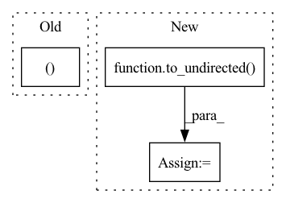

Pattern ID :16038
Before Change
rs = np.random.RandomState(seed)
A_u = nx.adjacency_matrix(G).todense()
indexes = np.where(A_u < 1)
indexes = np.c_[indexes[0],indexes[1] ]
neg_index = rs.choice(np.arange(len(indexes)), size=int(np.sum(A_u)))
neg_edges = indexes[neg_index].tolist()After Change
mst = list(tree.minimum_spanning_edges(G, algorithm="kruskal", data=False))
nmst = sorted(list(set(G.edges) - set(mst)))
undirect_edge_index = to_undirected( edge_index)
neg_edges = negative_sampling(undirect_edge_index, force_undirected=False).numpy().T
neg_edges = map(tuple, neg_edges)
neg_edges = list(neg_edges)
len_val = int(prob_val*len(row))
len_test = int(prob_test*len(row))In pattern: SUPERPATTERN
Frequency: 3
Non-data size: 3
Instances Fragment ID: 53840685
Project Name: sherylhyx/pytorch_geometric_signed_directed
Commit Name: eeeffe159fa0bd2b54e276e7605f8aaa238d8202
Time: 2022-02-18
Author: xzhang15@wpi.edu
File Name: torch_geometric_signed_directed/utils/directed/directed_link_split.py
M Class Name: AnonimousClass
N Class Name: AnonimousClass
M Method Name: directed_link_class_split(8)
N Method Name: directed_link_class_split(8)
M Parent Class:
N Parent Class:
M File Name: torch_geometric_signed_directed/utils/directed/directed_link_split.py
N File Name: torch_geometric_signed_directed/utils/directed/directed_link_split.py
M Start Line: 104
M End Line: 168
N Start Line: 100
N End Line: 162
Before Change
if self.wbo:
edge_index = []
for bond in [mol.OBMol.GetBondById(i) for i in range(mol.OBMol.NumBonds())]:
a1, a2 = sorted((bond.GetBeginAtomIdx(), bond.GetEndAtomIdx() ))
edge_index.append([a1, a2])
edge_index = (After Change
edge_index = np.array(nx.complete_graph(atomids.size(0)).edges())
edge_index = torch.from_numpy(edge_index).t().contiguous()
edge_index, _ = add_self_loops(edge_index, num_nodes=coords.shape[0])
edge_index = to_undirected( edge_index)
// Graph object
graph_data = Data(
atomids=atomids, Fragment ID: 53840686
Project Name: josejimenezluna/delfta
Commit Name: 2c65c2826d42e4c553e4a0b5c2b4d7a18b78e4f4
Time: 2021-10-18
Author: hawk31@gmail.com
File Name: delfta/net_utils.py
M Class Name: DelftaDataset
N Class Name: DelftaDataset
M Method Name: __getitem__(2)
N Method Name: __getitem__(2)
M Parent Class: Dataset
N Parent Class: Dataset
M File Name: delfta/net_utils.py
N File Name: delfta/net_utils.py
M Start Line: 61
M End Line: 86
N Start Line: 71
N End Line: 74
Before Change
mapped_edge1 = tuple([mapping[edge[0]], mapping[edge[1]]])
counts[edge_dict[mapped_edge1], edge_orbit] += 1
mapped_edge2 = tuple([mapping[edge[0]], mapping[edge[1]]])
counts[edge_dict[mapped_edge2], edge_orbit ] += 1
counts = counts/subgraph_dict["aut_count"]
After Change
edge_dict[tuple(edge)] = i
if not directed:
subgraph_edges = to_undirected( torch.tensor(subgraph_dict["subgraph"].get_edges().tolist()).transpose(1,0)) .transpose(1,0).tolist()
G_gt = gt.Graph(directed=directed) Fragment ID: 53840682
Project Name: gbouritsas/graph-substructure-networks
Commit Name: 60544ce9d338f0284204d0fce6468024e562569a
Time: 2020-11-21
Author: gb318@rosella.doc.ic.ac.uk
File Name: utils_graph_processing.py
M Class Name: AnonimousClass
N Class Name: AnonimousClass
M Method Name: subgraph_isomorphism_edge_counts(1)
N Method Name: subgraph_isomorphism_edge_counts(1)
M Parent Class:
N Parent Class:
M File Name: utils_graph_processing.py
N File Name: utils_graph_processing.py
M Start Line: 194
M End Line: 220
N Start Line: 139
N End Line: 172